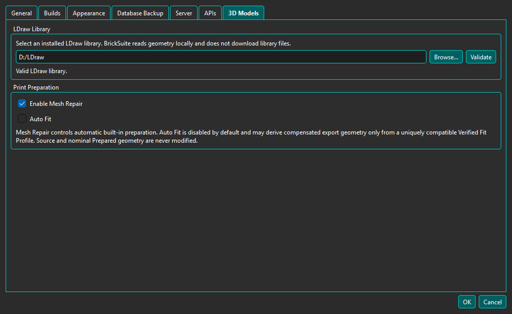
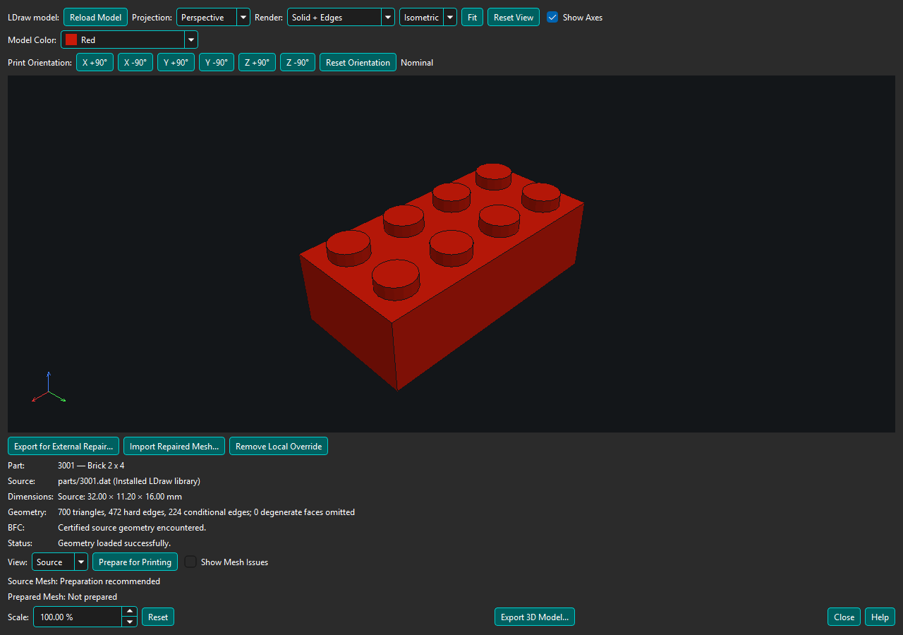

BrickSuite reads native geometry from an LDraw library installed on this computer. It does not download an LDraw library or send geometry to an online service.

Open Edit → Settings → 3D Models, choose the LDraw library root, and select Validate. A usable root contains parts and p folders and recognizable .dat files. If a saved removable or network path is unavailable, BrickSuite preserves the setting and reports that the library is unavailable.

Open Part Details and select 3D Model.... BrickSuite uses only exact stored LDraw external identities; it does not guess from the Rebrickable Part number. The persistent, non-modal viewer can remain open after Part Details closes, and opening another Part reuses it.
Perspective is the default; Orthographic is useful for engineering inspection. Standard views are deterministic and use the same Z-up convention as OBJ export. Show Axes toggles the labeled XYZ triad.
Model Color changes only geometry that inherits LDraw current color 16. Explicit and direct colors remain unchanged. This is presentation only and does not modify the Part, Inventory, or LDraw source.
Print Orientation rotates the model in exact 90-degree steps around the build X, Y, and Z axes. These controls are independent of camera orbit and standard views: they describe how the Part will be exported and placed in a slicer. Opposite steps cancel, and Reset Orientation restores the nominal model orientation.
Use Tools > 3D Model Viewer > Open LDraw File... to test a local .dat or .ldr file. The picker remembers the open/import directory for this session. The viewer labels the source External LDraw File and shows its full path. The configured installed LDraw library supplies subparts and primitives; embedded MPD sections retain their usual behavior. The selected folder is not added as a dependency library. Missing references are reported by name.
Use Prepare for Printing and the existing Source/Prepared views. Hover over the geometry counts and Prepared Mesh status for source references, Source Coverage, preparation route, and recognized feature contracts. External filenames never supply a catalog Part identity. Auto Fit and profile ManufacturingMesh are unavailable for these ad-hoc files; export nominal Prepared Mesh as 3MF, STL, or OBJ after successful preparation. Failed preparation does not become printable merely because Source export is available.
Open another file through Tools or use Reload after editing the current file. Opening a catalog Part returns to normal catalog behavior. Opening, preparing, and exporting external files never creates aliases, changes catalog mappings, or installs a printable override.
BrickSuite rejects absolute, traversal, escaping symbolic-link, cyclic, ambiguous-case, malformed, and excessive references. Review geometry in your slicer before printing. The viewer does not currently provide slicing, CAD editing, whole-model viewing, or remote Host geometry transport.